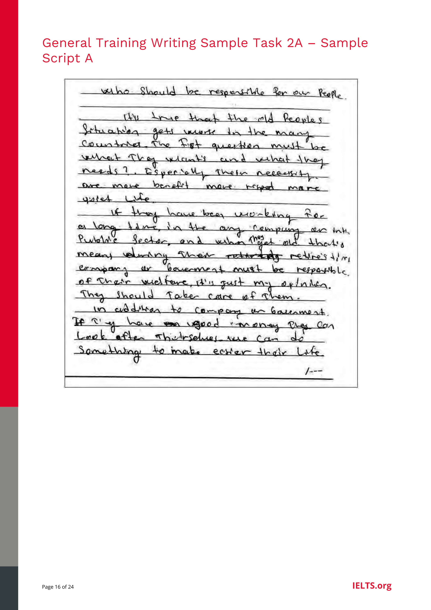
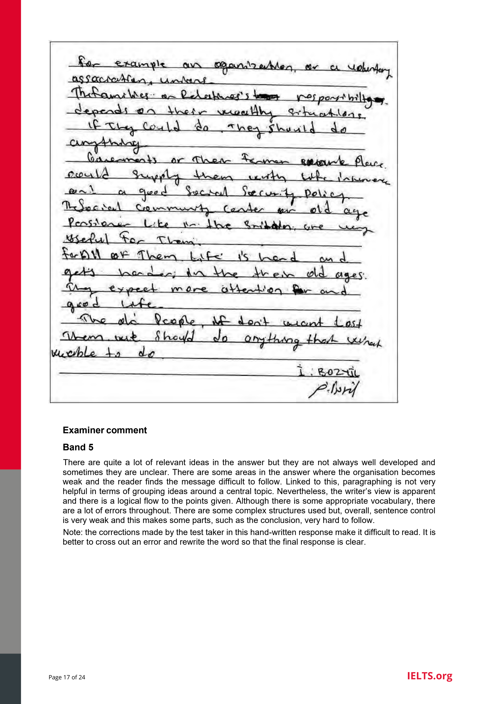

Elderly Care: Government vs. Family
General Training Writing Task 2 evaluates your capability to formulate and develop a position regarding a social debate. Study the official prompt, read Candidate Script A across both PDF pages, and review the examiner's assessment of sentence control and paragraphing.


"There are quite a lot of relevant ideas in the answer but they are not always well developed and sometimes they are unclear. There are some areas in the answer where the organisation becomes weak and the reader finds the message difficult to follow. Linked to this, paragraphing is not very helpful in terms of grouping ideas around a central topic. Nevertheless, the writer’s view is apparent and there is a logical flow to the points given. Although there is some appropriate vocabulary, there are a lot of errors throughout. There are some complex structures used but, overall, sentence control is very weak and this makes some parts, such as the conclusion, very hard to follow."